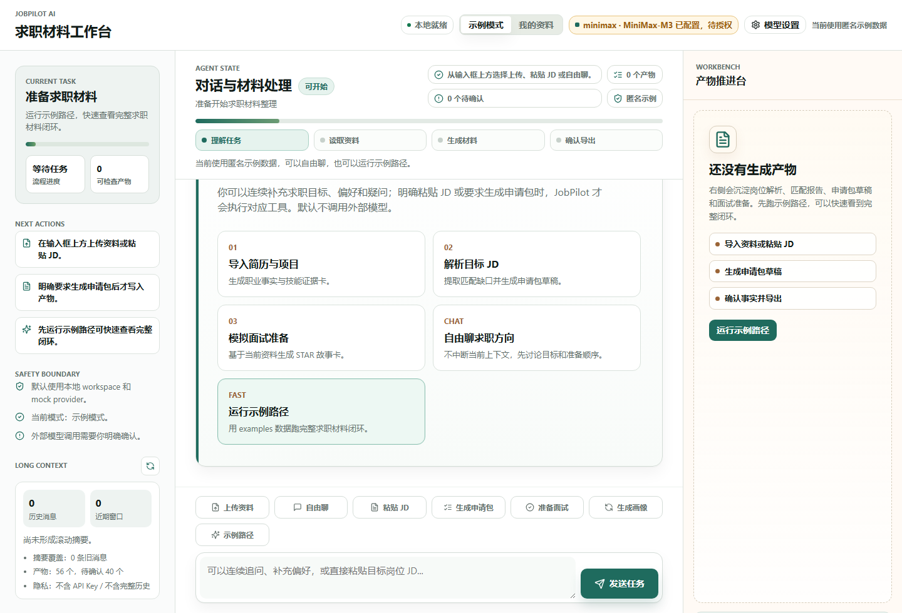
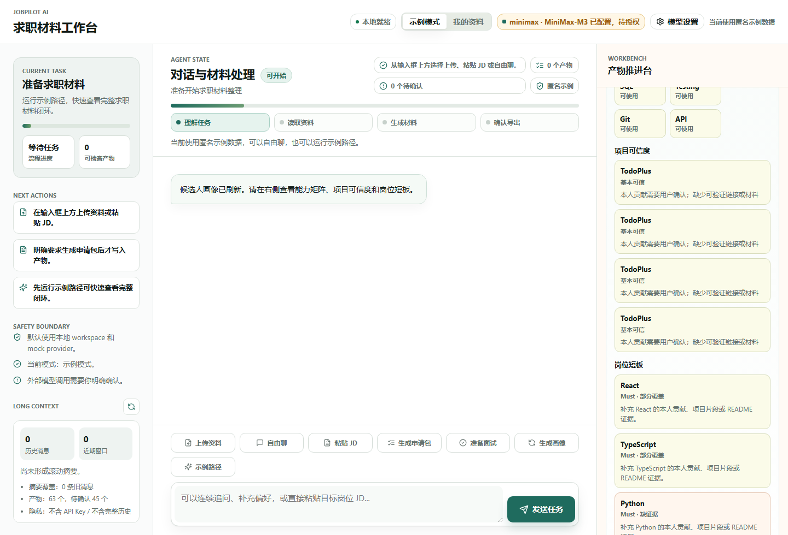
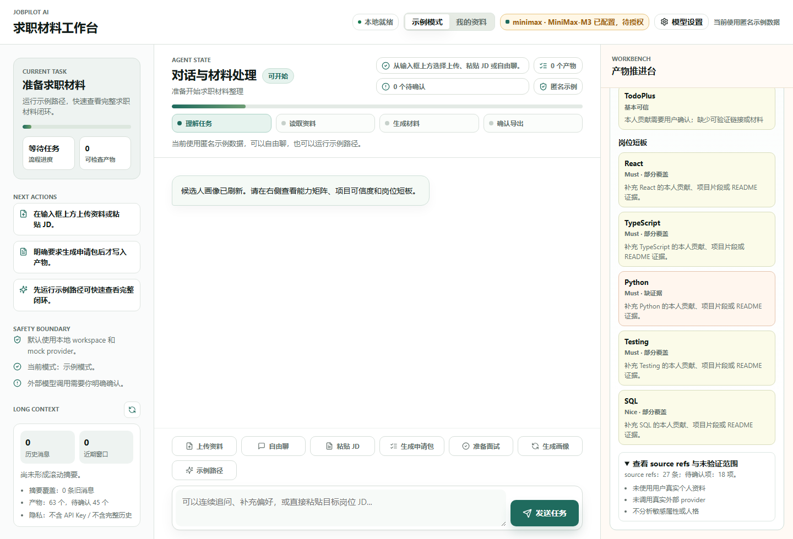
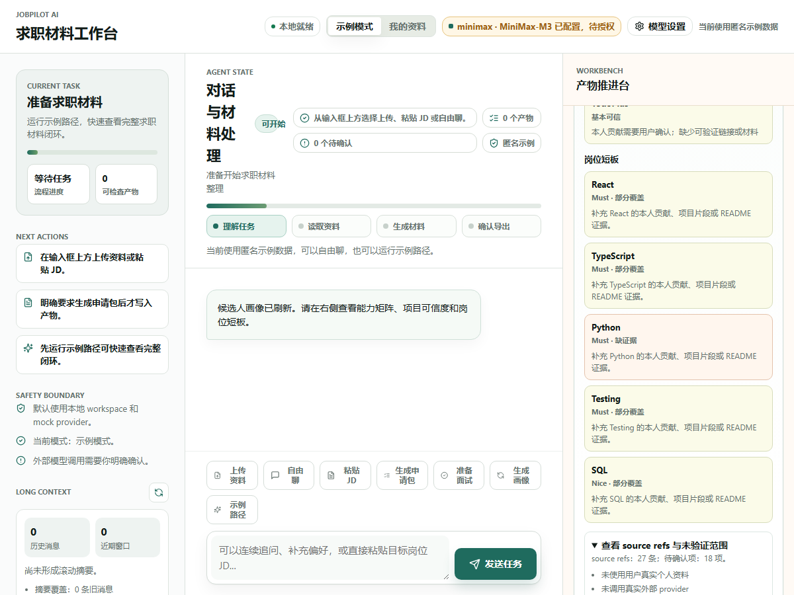
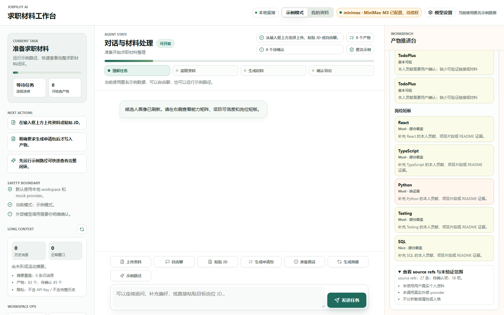
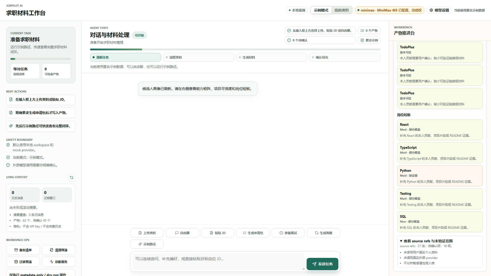
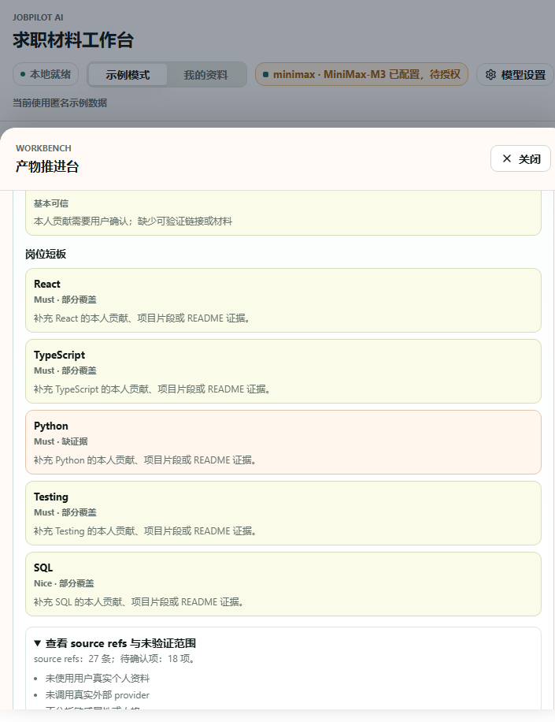
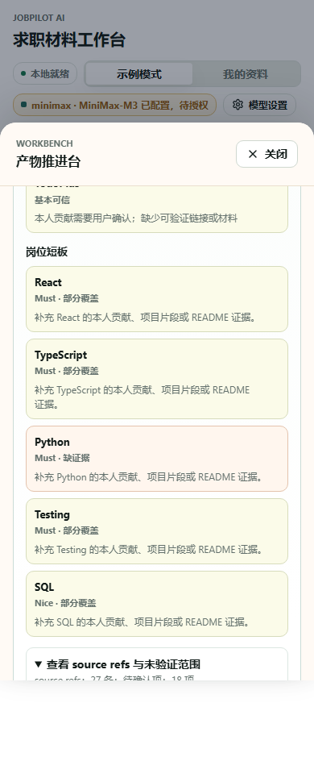

P6-REAL / P7-post 阶段自动化验收报告
P6-REAL 已完成 gate-only 门禁自动化验收；真实 provider 未授权未执行。
报告路径：docs/reports/P6_REAL_P7POST_STAGE_ACCEPTANCE_REPORT.html；生成时间：2026-07-01T04:46:39.933022+00:00
目标架构与当前实现
P6-REAL
Provider Consent UI、Provider Policy Gate、Long Context Manager、Provider Adapter、脱敏 Invocation Log。
P7-post
本轮只执行 synthetic/fixture 复验，不读取真实个人资料，不声明 P5-REAL 通过。
Evidence
HTML 报告、JSON evidence、PRD 规格检视、敏感信息扫描和阶段审计。
阶段结论
| 项目 | 状态 | 证据 | 不得声称 |
|---|---|---|---|
| P6-REAL gate-only | pass | docs/reports/P6_REAL_PROVIDER_ACCEPTANCE_REPORT.html | 不得声称真实 provider 质量已通过 |
| P6-REAL real mode | not-executed | 未授权执行 | 未授权时不得声称真实外呼已发生 |
| P5.5 visual evidence | pass | docs/reports/P5_5_CANDIDATE_PROFILE_ACCEPTANCE_REPORT.html；截图目录：docs/reports/evidence/p5_5_candidate_profile | 不得替代真实个人资料复验 |
| P7-post synthetic | pass | 三身份合成资料报告；20 轮对话补证：present / cases=3 / turns=60 | 不得替代 P5-REAL 真实资料复验 |
| P5-REAL | not-executed | 用户未提供真实资料路径，本轮未读取 | 不得声称真实个人资料复验通过 |
用户场景体验路径截图
以下截图来自 Headless Chrome/CDP 自动化路径，覆盖本地 Chatbox 工作台、候选人画像、能力矩阵、项目可信度、岗位短板、source refs 和多视口可读性。

docs/reports/evidence/p5_5_candidate_profile/p5_5_initial_desktop.png
docs/reports/evidence/p5_5_candidate_profile/p5_5_profile_overview.png
docs/reports/evidence/p5_5_candidate_profile/p5_5_source_refs.png
docs/reports/evidence/p5_5_candidate_profile/p5_5_profile_1200.png
docs/reports/evidence/p5_5_candidate_profile/p5_5_profile_1600.png
docs/reports/evidence/p5_5_candidate_profile/p5_5_profile_1920.png
docs/reports/evidence/p5_5_candidate_profile/p5_5_profile_720.png
docs/reports/evidence/p5_5_candidate_profile/p5_5_profile_mobile_390.png命令结果
| 命令 | 本轮结果 |
|---|---|
.venv/bin/python -m pytest | passed |
npm --prefix apps/chatbox run build | passed |
Headless Chrome/CDP P5.5 browser acceptance | passed |
drawio XML parse | passed |
sensitive / false-claim scan | passed |
P7-post 合成资料证据
| 报告 | 状态 | 路径 |
|---|---|---|
| P5_SYNTHETIC_REALISM_ACCEPTANCE_ops_to_frontend.html | pass | /mnt/c/workspace/interview_service/docs/reports/P5_SYNTHETIC_REALISM_ACCEPTANCE_ops_to_frontend.html |
| P5_SYNTHETIC_REALISM_ACCEPTANCE_qa_to_fullstack.html | pass | /mnt/c/workspace/interview_service/docs/reports/P5_SYNTHETIC_REALISM_ACCEPTANCE_qa_to_fullstack.html |
| P5_SYNTHETIC_REALISM_ACCEPTANCE_teacher_to_edtech.html | pass | /mnt/c/workspace/interview_service/docs/reports/P5_SYNTHETIC_REALISM_ACCEPTANCE_teacher_to_edtech.html |
P6 Evidence 摘要
{
"mode": "gate-only",
"generated_at": "2026-07-01T04:44:16.227022+00:00",
"workspace_id": "ws_06c58be20b02",
"session_id": "chat_55a5761728b4",
"authorization": {
"real_provider_authorized": false,
"max_calls": 3,
"allowed_data_classes": [
"recent_messages",
"rolling_summary",
"workspace_summary",
"artifact_summary"
],
"report_fields": [
"provider",
"model",
"status",
"duration_ms",
"redaction_summary",
"fallback"
]
},
"steps": [
{
"name": "default_status",
"status": "pass",
"evidence": {
"p6_state": "mock_default",
"provider": "mock",
"called_in_session": false
}
},
{
"name": "configured_not_called",
"status": "pass",
"evidence": {
"configured": true,
"configured_is_called": false,
"called_in_session": false
}
},
{
"name": "chat_without_consent_fallback",
"status": "pass",
"evidence": {
"provider_invocation_status": "consent_required",
"fallback_used": true,
"chat_mode": "free_local"
}
},
{
"name": "consent_requires_explicit_confirmation",
"status": "pass",
"evidence": {
"consent_required": true,
"consented": false
}
}
],
"counts": {
"default_chat_invocations": 2,
"final_chat_invocations": 3
},
"final_status": {
"p6_state": "failed",
"configured": true,
"configured_is_called": false,
"called_in_session": false,
"fallback_used": true,
"last_error": "CONSENT_REQUIRED",
"api_key_redacted": true
},
"latest_invocation": {
"status": "policy_denied",
"error_code": "CONSENT_REQUIRED",
"fallback_used": true,
"provider_name": "openai_compatible",
"model": "deepseek-chat"
},
"prd_review": [
{
"requirement": "默认不外呼真实 provider",
"status": "pass",
"evidence": "默认 provider=status mock，chat invocation count 为 0。"
},
{
"requirement": "configured 不等于 called",
"status": "pass",
"evidence": "配置 provider 偏好后 configured=true，但 called_in_session=false。"
},
{
"requirement": "未确认外呼必须 fallback",
"status": "pass",
"evidence": "provider_invocation_status=consent_required，fallback_used=true。"
},
{
"requirement": "报告不得声明真实 LLM 质量通过",
"status": "pass",
"evidence": "本报告结论为真实 provider 未执行。"
}
],
"unverified_scope": [
"未调用 MiniMax、DeepSeek、OpenAI-compatible 或其他真实 provider。",
"未读取真实个人资料。",
"未验证真实 LLM 回复质量。"
]
}
PRD 规格检视
| 规格 | 结论 | 说明 |
|---|---|---|
| 真实 provider 仅 opt-in | 通过 gate-only | 未授权时只验证门禁和 fallback，不发生真实外呼。 |
| 真实资料必须用户授权 | 通过边界 | 本轮只使用合成资料，不读取真实资料。 |
| 报告脱敏 | 通过 | 报告只展示 provider 状态、脱敏摘要和文件级证据。 |
| 不做虚假验收 | 通过 | 未执行路径均保持 not-executed。 |
| 界面证据可读 | 通过 | P5.5 报告截图展示 Chatbox、画像面板和 source refs，多视口截图可直接人工复核。 |
代码检视与文档审计摘要
| 区域 | 结论 |
|---|---|
| 代码检视 | Profile、Provider Gate、Long Context、Workspace dry-run 和报告脚本均有对应 eval 或截图证据；未发现本轮阻塞级问题。 |
| 文档审计 | active PRD、目标架构、验收门槛和 drawio 均区分自动化候选、待真实验收和后续独立阶段。 |
| 功能覆盖 | P5.5 画像、P6 fake/gate-only provider、P7 workspace dry-run 具备自动化证据；真实 provider 与真实资料保持未执行。 |
未验证范围
- 未验证真实 MiniMax、DeepSeek、OpenAI-compatible provider 的回复质量。
- 未读取或验收用户真实个人资料路径。
- 未执行 workspace 删除、cleanup apply 或 migration apply。
- 未实现或验收 SaaS、ASR、会议平台、自动投递、MCP/CLI。